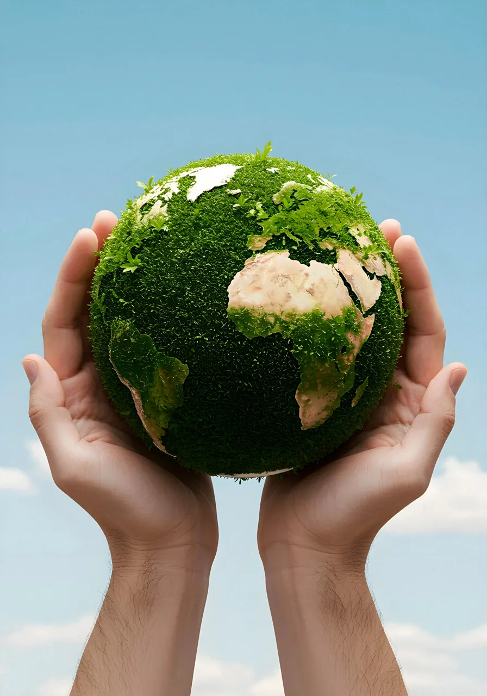
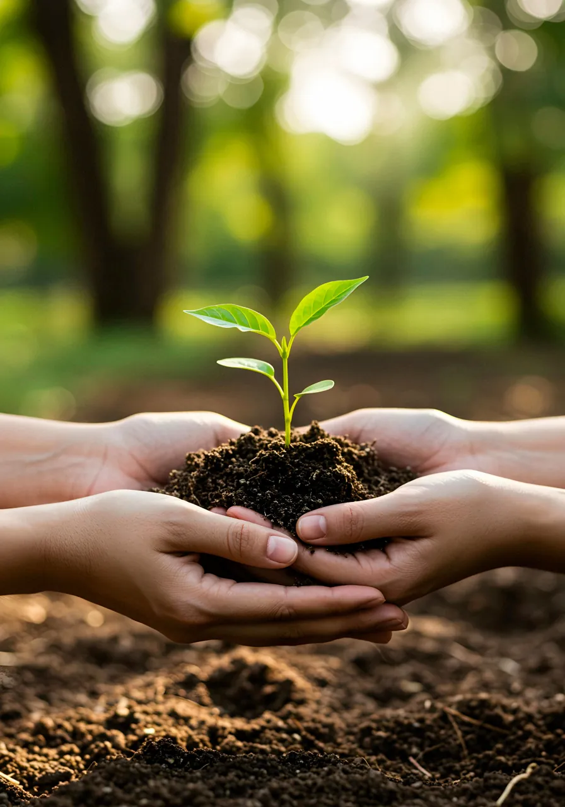
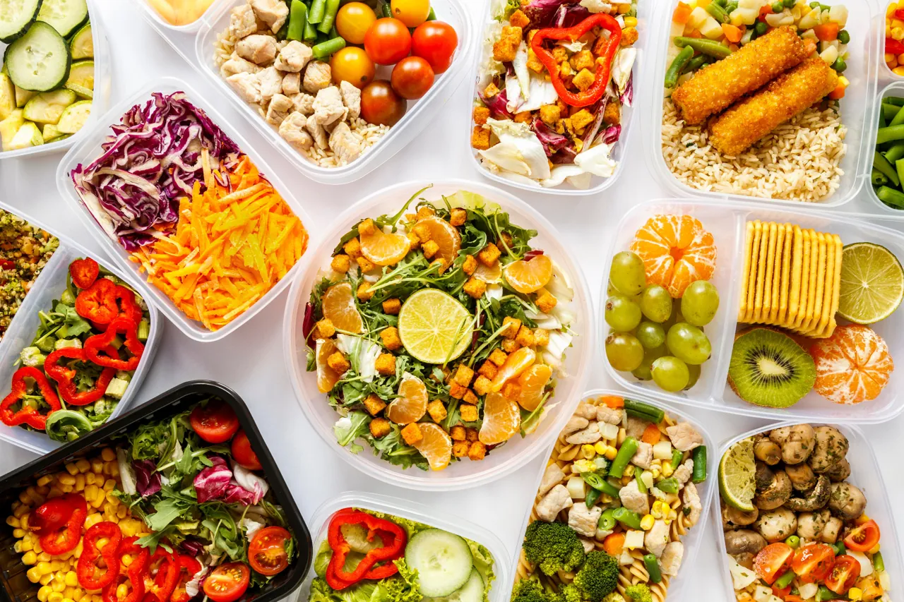
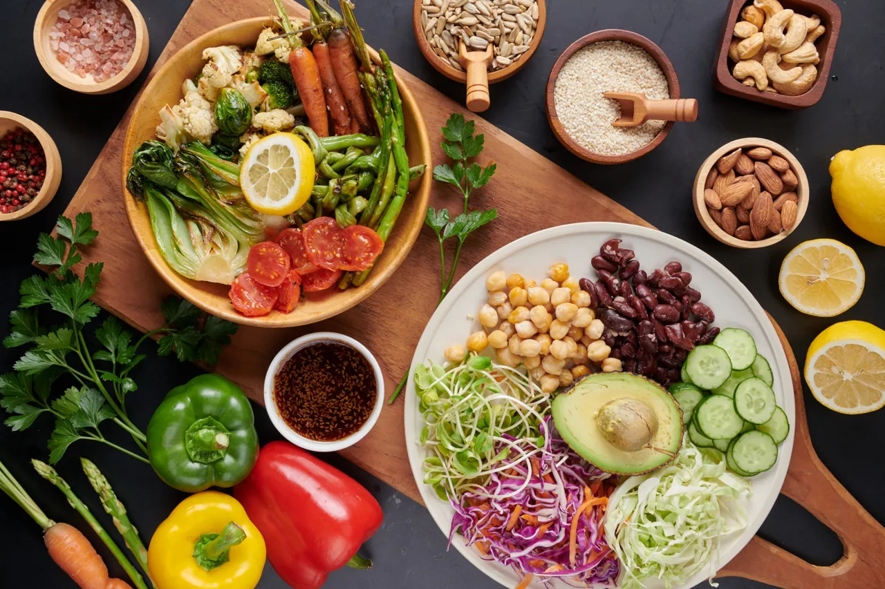
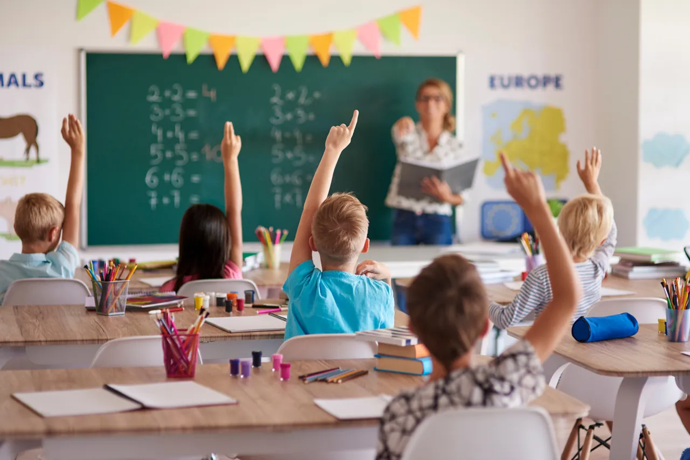

ONG UBM - Unidos por um Bairro Melhor
Início
Sobre
Projetos
Voluntariado
Doações
Galeria
Transparência
Blog
Contato
Galeria de Imagens
Confira alguns registros das nossas ações sociais, ambientais e educacionais.

Protegendo a Terra
União entre gerações

Esperança e Renovação

Alimentação Solidária

Nutrição e Bem-Estar
Educação para Todos

Educação e Alegria